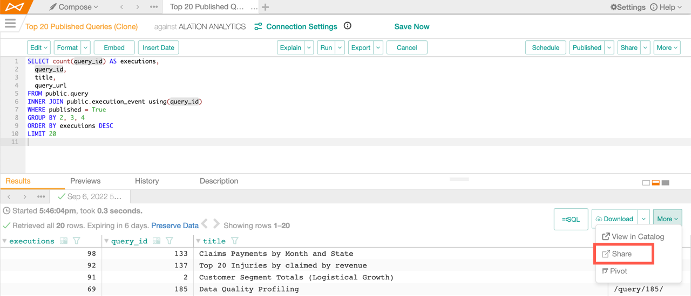
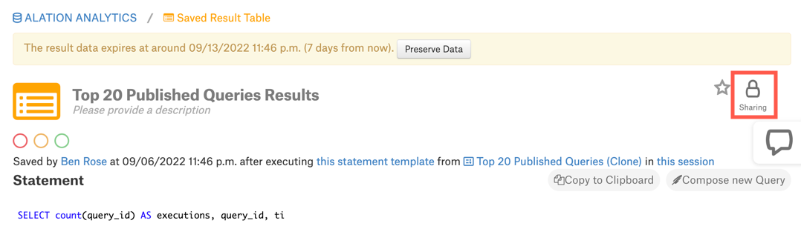

Share Query Results¶
Alation Cloud Service Applies to Alation Cloud Service instances of Alation
Customer Managed Applies to customer-managed instances of Alation
Every time you run or execute a query in Compose, Alation creates a new results tab in Compose and a new results page in the catalog. You can visit the results page by going to the Results tab in Compose and clicking More > View in Catalog.
The results in Compose and in the query results catalog page are by default only visible to the user who ran them. If sharing is enabled by an admin, you can share the query results catalog page with other users. They’ll get an email with a direct link to the results page and can also discover the results page using Alation’s search.
Note
By default, query results expire after a certain amount of time. After that time, the results disappear from the Compose Results tab and the results catalog page. If enabled by your admin, you can choose to preserve query results so they don’t expire. See Save Query Results for more information.
Alation admins can disable or limit the ability to share query results. See Manage Sharing of Query Results.
There are multiple ways to share your query results:
These ways of sharing query results are described in more detail below.
Share Query Results in Compose¶
In Compose, click More > Share in the Results tab.
Use the Sharing settings dialog to choose who to share the query results with. See Sharing Settings Dialog below for more help.
Share Query Results in the Catalog¶
On the query results catalog page, click the Sharing lock icon.
Use the Sharing settings dialog to choose who to share the query results with. See Sharing Settings Dialog below for more help.
Share Query Results by Scheduling the Query¶
When you schedule a query to run automatically, you can also share the results of the scheduled runs. See Schedule Queries for more information.
Share Query Results by Sharing the Query¶
In versions 2022.4 and earlier, you can choose to automatically share all your query’s results whenever you share the query itself with someone else. See Sharing Queries in Compose and Granting Access and Sharing Queries in the Catalog for details.
In 2023.1 and later, it’s not possible to share all a query’s results automatically. Instead, you must share each set of query results individually using one of the methods described above.
Sharing Settings Dialog¶
When you share query results through Compose or the catalog, the Sharing settings dialog appears. The dialog has several sections.
Direct link to this page¶
The address of the query results page appears at the top of the dialog. You can copy and share this link. Users who haven’t been granted access will not be able to see the results, but they will see a Send access request button. This button will send an email to you indicating that the user would like you to share the query results with them.
Title¶
You must add a title in order to share the query results. Adding a title enables users to find the results through Alation’s search feature, if the results have been shared with them.
Visibility¶
Query results can be shared publicly or privately.
Public means everyone can see the query results as long as they have access to the underlying data source and view access to the query itself.
Private means only the individuals or groups you specify can see the query results.
If the Public option is disabled, that means an admin has limited sharing to private only.
Share with these users¶
Enter a user’s name or email address, or enter a group name. If the visibility is private, only these users and groups will have access to the results. They’ll also get an email with a link to the results page. If the visibility is public, everyone will have access, and the chosen users and groups will get the email notification.